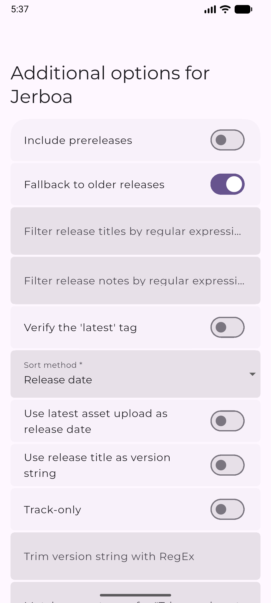

Obtainium 新手五分钟上手：别再一个个去官网找 APK 了
一个开源的 Android 应用更新管家，把 GitHub、F-Droid、酷安这些发布源都装进同一个 App 里。从零到跑通只需几步，这篇带你走最短路径。
这篇能带你从完全不懂到用起来——不需要任何刷机或 ADB 基础，只要一台能装 APK 的 Android 手机就行。
它到底是干嘛的
你肯定有过这种经历：想装某个开源工具，去 GitHub Release 页面翻半天找对应架构的 APK；装完过两周忘了它，再想起时已经落后好几个版本；手机里同时装着 F-Droid 和酷安，两边各有各的推送节奏，还不一定覆盖你关心的那几个 App。
Obtainium 干的事很简单——去它的官网看功能清单你就懂了，它把这些应用发布源（GitHub、GitLab、F-Droid、IzzyOnDroid、APKMirror，甚至应用宝、酷安、华为应用市场这些国内商店，再加一个能抓任意网页 APK 的 HTML 兜底源）全接进来，你只管把应用的源链接扔进去，剩下的版本比对、下载、通知、后台静默安装，它一条龙搞定。
类比一下：如果每个软件的发布页面是一家独立小店，Obtainium 就是你手机里的自动补货清单——你跟它说一声"我要这家店的这个商品"，以后这家店上新货了，它自己过来帮你搬回家，还能定好只在 Wi-Fi 和充电时才动手，不会偷偷耗你流量。

五分钟上手：从下载到第一次跑通
好消息是，Obtainium 自己就是用这种方式发布的，所以我们可以边装边演示。
第一步：拿到安装包。 从官方下载拿最新的 APK——它有 GitHub Release 和 F-Droid 两个发布通道，随便挑一个就行，后面会解释两者的区别。
第二步：处理系统拦截。 第一次装非应用商店来源的 APK，Android 十有八九会弹"未知来源"警告。别慌，点设置里的允许本次安装（或者给文件管理器/浏览器授权"允许安装未知应用"），装完可以关掉，Obtainium 只需要这一次。
第三步：打开后先加它自己。 装好 App 打开，你会看到四个标签页：应用、添加、导入导出、设置。点「添加」，在输入框里粘贴 Obtainium 自己的 GitHub Release 链接（或者直接搜 Obtainium），源类型让它自动识别就行——大多数场景下 Obtainium 能从链接自动判断是 GitHub、GitLab 还是别的。
第四步：确认应用信息。 添加页会显示识别到的应用名、包名、可用架构（arm64-v8a、armeabi-v7a、x86_64 之类，不知道自己手机架构也没关系，勾上 Obtainium 推荐的那个就行）。下面还有一排通用选项，比如「仅跟踪不下载」（只想收到更新通知、不想自动装的勾这个）、「通知开关」（关掉就不弹通知）。
第五步：点保存，等它第一次检查更新。 回到「应用」标签，你刚加的 Obtainium 会出现在列表里，很快就能看到它识别到的当前版本和最新版本号。如果有更新，下载按钮会亮起来。

上手后先玩这三个功能
跑通一次之后，别着急加一堆应用。先玩这三个最能体现 Obtainium 价值的功能，每个都能让你"哇原来还能这样"。
众包配置库：省去手动填参数
有些应用的源链接比较刁钻——比如某个 GitHub 仓库同时发布好几个架构的 APK，或者版本号藏在文件名里正则才抓得到。社区已经把这些坑都踩过了：在添加页搜应用名的时候，Obtainium 会自动匹配社区贡献的预设配置，直接用就行。你会发现本来要手动调一堆正则和筛选器的应用，点一下就加好了——这意味着什么？意味着 Obtainium 的门槛被社区帮你降了一大截。如果碰到预设没覆盖到的，或者想自己写正则抠版本号，去obtainium文档查参数格式就行，里面每个源的进阶选项都写得很细。
更新条件：只在 Wi-Fi 和充电时才动手
进「设置」翻到更新条件那一组，你会看到几个开关：仅 Wi-Fi 更新、充电时才更新、更新间隔、并行下载数量。默认配置已经很温和了，但你可以根据自己的习惯调——比如夜间充电时才允许后台静默更新，或者把检查间隔从默认的几小时改成你想等的天数。这意味着什么？意味着 Obtainium 不会在你出门在外用流量时偷偷下 APK，也不会在你玩手机正忙时突然弹安装提示。
导入导出：换手机不怕丢清单
进「导入导出」标签，点自动导出——Obtainium 会把你整个应用跟踪清单（包括每个应用的源链接、筛选选项、架构偏好）导出成一个 JSON 文件，默认存到下载目录。换手机时只要把这个文件复制过去，在新手机的 Obtainium 里点导入，原来加的所有应用一个不差，连那些细枝末节的筛选参数都原样保留。这意味着什么？意味着你花半小时调教好的跟踪清单，不会因为换手机或重装系统就打了水漂。
小白的三个常见疑问
系统每次都拦安装，能不能让它消停点？ 可以。Android 的「未知来源」授权是按应用分的——你第一次装完 Obtainium 之后，给 Obtainium 本身授权"允许安装未知应用"（在系统设置的应用管理里找），以后 Obtainium 自动下载更新时就能直接装，不会再弹警告。如果想全自动连点确认都省了，后面可以配 Shizuku（免 root 提权）或者直接上 Root 安装器。
GitHub 限额用完了怎么办？ GitHub 对未登录的 API 请求有每小时 60 次的限制，你如果加了好几十个 GitHub 源的应用，可能某天早上醒来发现全红了。两种解法：一是在 Obtainium 设置里填一个自己的 GitHub 个人访问令牌（token），额度直接涨到每小时 5000 次；二是配一个代理前缀，把请求绕过去。令牌不需要开任何敏感权限，只需要 read_api 那一级就行。
想跟踪一个冷门小站的 APK，Obtainium 支持吗？ 大概率支持。Obtainium 有一个叫 HTML 兜底源的东西——你把那个冷门页面的 URL 粘进去，它会按一套六步逻辑在页面里找 APK 下载链接，还支持你自己写正则从文件名里抠版本号。换句话说，只要那个网页上能点到 APK，Obtainium 就能追着它更新。
下一步去哪看
Obtainium 的能力远不止上面说的这些——批量导入应用链接、按分类给应用打彩色标签分组、AppVerifier 校验签名证书防供应链攻击、WorkManager 后台跑更新不耗电……每一块展开都能写一篇。
如果你想把某个特别冷门的源接进去，或者琢磨怎么让后台静默安装更稳，去刚才提到的文档站翻翻就行。这份资料的维护在三个仓库都能拿到——GitHub 上是主线，Gitee 上有一份完整镜像方便国内朋友直接访问，GitCode 那边也同步了一份，搜 Obtainium 就能找到。